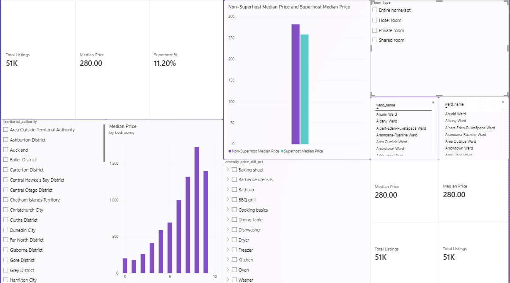
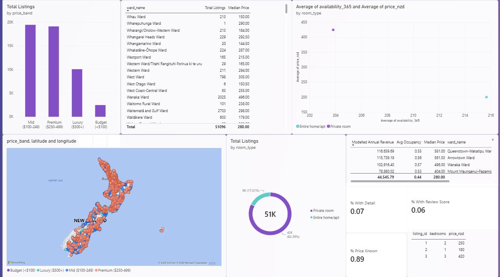

BUSINESS INTELLIGENCE FOR NEW ZEALAND SHORT-TERM RENTALS
Dataset and business problem
Problem. Rental data is spread across four large files, so it is hard to compare ward prices or trust the numbers.
Question. How do price and demand differ by ward, and how reliable is each figure?
Dataset. Inside Airbnb New Zealand, 13 August 2026, under a Creative Commons licence.
51,096
listings
3,472,029
review events
18,733,644
calendar listing-days
Rimsha Shakya · 270898368 · MBI807B Assessment 1
01
Speaker notes · slide 1
Introduce yourself and the project. Problem: rental data is scattered and not decision-ready. Question: how do price and demand differ by ward and how far can each number be trusted. Dataset: Inside Airbnb New Zealand, 13 August 2026, four sources: listings 51,096, reviews 3,472,029, calendar 18,733,644 listing-days, plus a 239-row ward reference.
STORAGE AND ARCHITECTURE
SQLite star schema now, cloud warehouse later
| Relational (SQLite) | Cloud warehouse | Document database | |
|---|---|---|---|
| Scalability | Single file; limited concurrency | Elastic; many users | High horizontal scale |
| Integrity | Foreign keys off by default | Constraints often informational | Schema not enforced |
| Security | No built-in roles | Misconfigured access; residency | Operator-configured |
| Verdict | Prototype choice | Production path | Not for core store |
Design: 3 fact tables (listings, monthly reviews, monthly calendar) and 4 dimensions (host, location, property, date). 0 foreign-key violations.
02
Speaker notes · slide 2
Three storage options were compared on scalability, integrity, security, cost and compliance. SQLite is the prototype choice because it matches the star schema, is transparent and reproducible, and costs nothing. Its limits are concurrency and governance, so a managed cloud warehouse is the production path when users or refresh frequency grow. A document database is not suitable for the core store. The warehouse has three fact tables and four dimensions, and a foreign-key check returns zero violations.
ETL PROCESS
Four Python scripts from raw files to a checked warehouse
1 Extract
Listings, reviews, calendar and wards
2 Clean
Remove duplicate IDs; flag and impute prices
3 Transform
Build dimensions; aggregate to listing-month
4 Load
Write to SQLite with key constraints
5 Verify
Counts, foreign keys, integrity check
What the cleaning does
5,455 missing prices (10.7%) are filled with the ward median and flagged, not hidden.
Calendar days are summed to listing-months: 18.7M rows become 649,337.
What the checks show
Zero duplicate listing IDs and zero orphan keys.
Integrity check passed; row counts reconcile.
03
Speaker notes · slide 3
Walk through the activity diagram: extract four sources, clean, transform in parallel, integrate, load, verify. Four commented Python scripts. Prices missing for 5,455 listings are imputed with the ward median and always flagged. Calendar days are aggregated to listing-month, which reduces the table about 29-fold to 649,337 rows. After loading, there are zero duplicates, zero orphans and the SQLite integrity check passes.
DASHBOARD DEMO
Power BI: price, quality and demand by ward


NZ$581 vs NZ$213. Queenstown-Wakatipu against Albert-Eden-Puketāpapa, a 2.7× gap.
NZ$280. National median, which misleads for any single ward.
10.7% and 6.7%. Imputed prices and listings with detail, shown beside the KPIs.
04
Speaker notes · slide 4
Live demo cue. Show the three-page Power BI file: overview page with total listings, median price and Superhost share; the ward ranking and map; and the reviews and calendar page. Use a slicer to show filtering by ward and room type. Then mention the Python notebook and the Rioel Aotearoa web prototype as supporting tools. Key message: price is local, and data-quality indicators sit beside every KPI. Occupancy and availability are proxies, not bookings.
RISKS AND RECOMMENDATIONS
Controls in place, five actions to take
Risks and controls
Integrity: keys, duplicate checks, SQL validation
Missing values: ward-median imputation with a flag
Snapshot bias: proxies named in every view
Privacy: aggregated views, no host names shown
Recommendations
1 Benchmark price by ward, not nationally
2 Show data-quality indicators beside KPIs
3 Treat reviews and availability as proxies
4 SQLite now, managed warehouse later
5 Retain dated release snapshots
From open data to a decision-ready warehouse. Thank you.
05
Speaker notes · slide 5
Risks: each has a control and evidence, with the residual risk stated in the report. Recommendations 1 to 3 start now with no new infrastructure; 5 follows in the next release; 4 is a decision gate based on usage. Close with the key message and thank the audience.